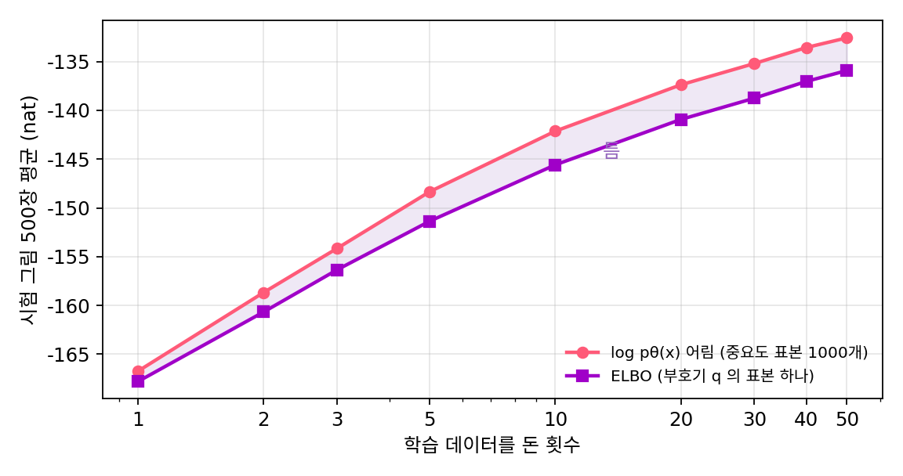

ELBO: 잴 수 없는 로그우도 아래에 받친 바닥
VAE의 손실은 「재구성은 잘하고, 구름은 사전분포에서 너무 멀지 않게」라는 바람을 두 항으로 적은 것이었다. 그런데 생성 모델에게 정말 바라는 것은 따로 있다. 실제 손글씨 그림을 보여 주었을 때 모델이 「이런 그림은 내가 자주 그린다」고, 곧 그 그림에 큰 확률을 주는 것이다. 모델이 그림 x를 그릴 확률은 사전분포에서 부호를 뽑고 복호기가 x를 그릴 확률을 모든 부호에 걸쳐 더한 것이다. 이 값을 직접 키울 수는 없을까?
왜 직접 잴 수 없나
부호가 2칸이면 이 적분을 격자로 셀 수 있다. 그런데 학습된 VAE에서 그림 하나가 큰 확률을 받는 부호 구역은 너비가 0.05 남짓으로 좁아서, 그 구역을 놓치지 않으려면 촘촘한 격자가 필요하다. 이 장에서는 그림마다 그 구역 둘레에 121 × 121 = 14,641칸의 격자를 놓고 복호기를 14,641번 돌려 셌다. 부호가 16칸이면 칸마다 점을 10개만 찍어도 10¹⁶번이다. 학습하는 동안 그림 한 장마다 이 값을 세는 것은 불가능하다.
젠센 부등식으로 바닥을 받친다
대신 부호기 구름 qφ(z ∣ x)를 빌려 적분을 「qφ에서 뽑은 부호들에 대한 평균」으로 바꾸고, 로그를 평균 안으로 넣는다. 로그는 위로 볼록한 함수라서 평균의 로그는 로그의 평균보다 작지 않다(젠센 부등식).
오른쪽 값은 qφ에서 부호를 뽑기만 하면 계산된다. 이 값을 ELBO (로그우도 아래에 받친 잴 수 있는 바닥 / evidence lower bound)라 한다. 「증거(evidence)」는 관측한 데이터의 로그 확률 log pθ(x)를 부르는 통계학의 말이고, ELBO는 그 아래쪽 경계(하한)라는 뜻의 머리글자다. 「엘보」라고 읽는다.
로그 안의 분수를 둘로 나누면 VAE의 손실이 그대로 나온다.
첫 식은 VAE 손실에 마이너스를 붙인 것과 같다. 재구성 항과 KL 항은 바람을 적은 두 항이 아니라, 처음부터 로그우도의 바닥이었다. 둘째 식은 바닥과 천장 사이의 틈이 무엇인지 말한다. 부호기 구름이 참 사후분포와 같아지면 틈은 0이 되고, ELBO가 곧 로그우도다. ELBO를 올리는 일은 천장(모델 θ가 그림에 주는 확률)을 올리는 일과 틈(구름이 사후분포에서 벗어난 정도)을 줄이는 일을 한꺼번에 한다.
바닥과 천장을 함께 재 보기
부호가 2칸인 VAE는 천장도 격자로 잴 수 있어서 둘을 함께 볼 수 있다. 시험 그림 1,000장에서 ELBO(부호를 구름에서 하나 뽑아 잰 값)는 평균 −138.12, 격자로 센 로그우도는 −132.20이다. 바닥은 천장보다 평균 5.9 nat 아래에 있다. 학습하는 동안 둘은 함께 올라갔다.

틈은 그림마다 다르다. 첫 시험 그림 100장의 틈은 중앙값이 2.05 nat인데 평균은 8.86 nat이다. 대부분의 그림에서는 구름이 사후분포와 잘 겹치지만, 몇 장은 크게 어긋난다는 뜻이다. 아래 위젯에서 그림 네 장의 사후분포와 부호기 구름을 겹쳐 보고 구름을 직접 옮겨 볼 수 있다.
ML에서: 재구성 항은 제곱 오차가 되고, 그림은 흐릿하다
이 장의 VAE는 흑백 그림에 칸마다 동전을 던지는 복호기를 썼다. 밝기가 연속인 그림에는 칸마다 정규분포를 두는 복호기 pθ(x ∣ z) = N(x̂(z), s²I)를 흔히 쓴다(s는 고정한 잡음의 크기). 그러면 재구성 항은 log pθ(x ∣ z) = −‖x − x̂(z)‖² / (2s²) + 상수, 곧 제곱 오차에 마이너스를 붙인 것이다. 신경망이 무언가를 제곱 오차로 맞히도록 학습하는 자리 뒤에 이런 ELBO가 숨어 있는 일은 이 책에서 다시 만난다.
그런데 VAE가 뽑은 그림을 보면 아직 흐릿하다. 사전분포에서 부호를 뽑아 복호기가 내놓은 잉크 확률을 그리면, 회색(0.2 ~ 0.8) 칸이 18.5%다. 학습에 쓴 흑백 그림에는 회색 칸이 하나도 없다.

부호를 16칸으로 늘려 같은 방식으로 학습해도 회색 칸이 8.6% 남는다. 부호가 늘면 ELBO는 −90.36까지 오르지만 흐릿함은 사라지지 않는다.
문제 13. 방의 넓이를 모를 때
이사 갈 방의 넓이를 모른다. 줄자는 없고, 방에 넣어 본 가구의 넓이만 안다. 침대 3 m², 책상 1.5 m², 옷장 1.2 m²를 겹치지 않게 넣었다. (가) 방의 넓이에 대해 무엇을 말할 수 있는가? (나) 집주인이 벽을 밀어 방을 넓혀 주었고, 가구를 다시 넣어 보니 소파 2 m²까지 들어갔다. 방이 넓어진 것과 가구를 더 넣은 것 가운데 무엇이 이 「아는 넓이」를 올렸는가? (다) 가구를 다 넣고 나서도 방이 실제로 12 m²라면 남은 틈은 무엇을 뜻하는가?

3 + 1.5 + 1.2 = 5.7이니까 방은 5.7 m²예요.

가구 사이에 빈 바닥은 없었어요?

있었죠. 그럼 방은 적어도 5.7 m²예요. 정확한 값이 아니라 바닥이네요.

(나)는 7.7이 됐는데, 방이 넓어졌다는 건 우리가 확인한 게 아니야. 원래 방에도 소파가 들어갔을 수도 있지. 우리가 아는 건 「적어도 7.7」뿐이고, 그게 방이 커져서인지 빈 곳을 더 채워서인지는 이 숫자만으로는 못 갈라.

ELBO에서는 무엇이 방이고 무엇이 가구일까요?

방이 로그우도, 가구가 ELBO예요. 방을 넓히는 건 모델 θ를 고쳐서 그림에 주는 확률을 올리는 거고, 가구를 더 채우는 건 부호기 구름을 사후분포에 맞춰서 틈을 줄이는 거예요. ELBO를 올리면 둘이 함께 일어나는데, 숫자 하나로는 어느 쪽이 얼마인지 몰라요.
(다)의 12 − 7.7 = 4.3은 빈 바닥이니까, 구름이 사후분포를 다 못 채운 만큼이네요.

기말 점수 최소 보장 같은 거네요. 「과제만으로 적어도 B」는 알지만, 시험을 봐야 실제 학점을 아는 거요.
문제 14. 사후분포를 그대로 쓰면 되지 않나
위젯 3의 그림 B와 그림 C를 본다. (가) 각 그림에서 부호기가 고른 구름의 ELBO, 격자로 센 로그우도, 틈은 얼마인가? (나) 「사후분포의 평균·표준편차에 맞춘 q로」를 누르면 틈은 어떻게 되는가? (다) 틈을 0으로 만드는 가장 좋은 q는 사후분포 자신이다. 그렇다면 VAE는 왜 처음부터 사후분포를 q로 쓰지 않는가? (위젯 3에서 그림 B와 C를 골라 값을 읽어 보자.)
그림 B는 ELBO −115.44, 로그우도 −115.06, 틈 0.39예요. 구름이 분홍 얼룩 위에 거의 딱 얹혀 있어요.

그림 C는… ELBO가 −296.75인데 로그우도는 −89.49예요. 틈이 207.26이에요! 구름이 분홍 얼룩 옆으로 한참 비껴 있어요.
그림 C는 숫자 1이네. 로그우도로는 그림 B보다 모델이 훨씬 잘 그리는 그림인데, 부호기가 엉뚱한 데를 짚어서 바닥만 낮게 나온 거야.
(나)를 눌러 봐요.
그림 C에서 누르니까 구름이 얼룩 위로 옮겨 가고 ELBO가 −89.82로 올라와서 틈이 0.33이에요. 그럼 늘 사후분포를 q로 쓰면 되잖아요.

위젯이 그 분홍 얼룩을 어떻게 그렸는지 생각해 봐요.

격자 14,641칸마다 복호기를 돌려서 p(z)pθ(x ∣ z)를 계산하고, 그걸 다 더한 값으로 나눴어요. 그 다 더한 값이… pθ(x)예요. 사후분포를 알려면 로그우도를 먼저 알아야 해요.
처음에 로그우도를 잴 수 없어서 바닥을 만든 건데, 바닥을 천장에 붙이는 q를 구하려면 다시 천장을 재야 하는 거네요. 빙 돌아 제자리예요. 부호가 2칸이라 위젯은 셀 수 있었지만, 16칸이면 못 세고요.

그래요. 그래서 계산할 수 있는 모양(정규분포)의 구름 가운데 사후분포에 가장 가까운 것을, 그림마다 따로 풀지 않고 부호기 신경망 하나가 한 번에 내놓게 한 거예요. 그 대가로 그림 C 같은 틈이 생겨요.
시험 답을 맞히려면 정답지가 필요한데, 정답지를 만들려면 시험을 풀어야 하는 거랑 같네요.
문제 15. 표본을 여러 개 쓰면
버르다(Yuri Burda), 그로스(Roger Grosse), 살라후트디노프는 2015년, 로그 안의 평균을 표본 S개로 어림한 뒤 로그를 씌우면 S가 클수록 더 높은 바닥이 된다는 것을 이용했다(중요도 가중 자동 부호기). 이 장의 VAE(부호 2칸)에서 시험 그림 1,000장에 대해 표본 S개짜리 바닥은 평균 S = 1: −138.12, S = 10: −135.98, S = 100: −135.05, S = 1,000: −134.56이다. 격자로 센 로그우도는 −132.20이다. (가) S = 1인 바닥은 무엇과 같은가? (나) S가 커질수록 바닥이 로그우도에 다가가는 까닭은? (다) S = 1,000에서도 2.4 nat가 남는 까닭은?
(가)는 표본 하나를 뽑아서 로그 안 평균을 그 표본 하나로 쓰는 거니까, 우리가 쓰던 ELBO 한 표본 어림이랑 같아요. −138.12요.
(나)는요?
로그 안의 평균을 표본 S개로 어림하면, 표본이 많을수록 그 어림이 참 평균에 가까워지니까 젠센 부등식에서 잃는 몫이 줄어. S가 무한히 크면 log E[…]를 정확히 계산하는 거라 로그우도와 같아지고.

그런데 1,000개를 뽑아도 −134.56이에요. 아직 2.36이나 모자라요. 1,000개면 많은 거 아니에요?
표본을 어디서 뽑았어요?
부호기 구름에서요. 그림 C처럼 구름이 사후분포 옆을 짚으면, 1,000개를 뽑아도 사후분포가 몰린 자리에는 하나도 안 떨어져요. 거기를 못 밟으면 평균이 크게 모자라요. 몇몇 그림이 평균을 끌어내린 거예요.
맞아요. 표본을 늘리는 건 같은 손전등으로 더 오래 비추는 일이고, 손전등이 엉뚱한 데를 비추면 오래 비춰도 한계가 있어요.
엉뚱한 단원을 열 번 복습해도 시험 범위를 못 맞추는 거랑 같네요.
문제 16. 칸마다 동전을 던지면 흐림이 사라질까
VAE가 뽑은 그림은 잉크 확률이라 흐릿하다. 그렇다면 복호기가 내놓은 확률대로 칸마다 동전을 던져 흑백 그림을 만들면 되지 않을까? 이 장의 VAE(부호 2칸)에서 N(0, I)로 부호 1만 개를 뽑아 그렇게 만든 그림과, 시험 그림을 견준다. 상하좌우 네 이웃이 모두 바탕인 잉크 칸을 「외톨이 잉크 점」이라 하자. (가) 그림 한 장당 외톨이 잉크 점은 시험 그림에서 0.06개, 동전 그림에서 9.74개다(잉크 칸 수는 둘 다 한 장당 약 104개). 무엇이 달라졌는가? (나) 왜 이런 일이 생기는가? (다) 무엇을 바꾸어야 하는가?
동전을 던지면 칸마다 0 아니면 1이니까 회색이 없어지죠. 흐림 문제는 끝났네요.
잉크 칸 수는 비슷한데, 외톨이 점이 160배예요. 그림으로는 어때요?
획 둘레에 깨 뿌린 것 같은 점이 많고, 획 가운데도 구멍이 숭숭 났어요. 흐린 그림이 지저분한 그림으로 바뀌었을 뿐이에요.
실제 손글씨에서는 왜 외톨이 점이 거의 없을까요?
펜으로 그으니까요. 한 칸이 잉크면 그 옆 칸도 잉크일 가능성이 아주 커요. 칸들이 서로 맞춰서 움직여요.
그런데 복호기는 pθ(x ∣ z)를 칸마다 따로 던지는 동전 784개의 곱으로 정했어요. 부호 z가 정해진 뒤에는 칸끼리 아무 관계가 없어요. 부호 2칸이 「획이 정확히 어디를 지나는지」까지 다 정하지 못하면, 남은 불확실함은 칸마다 따로 던지는 동전으로밖에 나타낼 수 없어요. 확률을 그리면 흐려지고, 동전을 던지면 칸마다 따로 튀어요.

그거 맨 처음 문제랑 같아요! 절댓값 오차를 칸마다 따로 쓰면 획이 끊긴다던 거요. 칸들이 「이번엔 왼쪽 1」이라고 함께 정하는 장치가 없으니까요.
그래요. 부호를 16칸으로 늘려도 회색 칸이 8.6% 남았어요. 부호가 늘면 남은 불확실함이 줄지만 없어지지는 않아요. (다)는 이 장에서 바로 답할 수 없어요. 칸들이 서로 맞춰 움직이는 그림의 분포를, 동전 784개의 곱이 아닌 다른 꼴로 적어야 해요.
확률론 시간에 「각 좌표의 주변분포가 맞는다고 결합분포가 맞는 건 아니다」고 배운 게 바로 이 그림이네요.